FREE-LIVO: Physically Decoupled Yet Tightly Coupled
LiDAR-Inertial-Visual Odometry
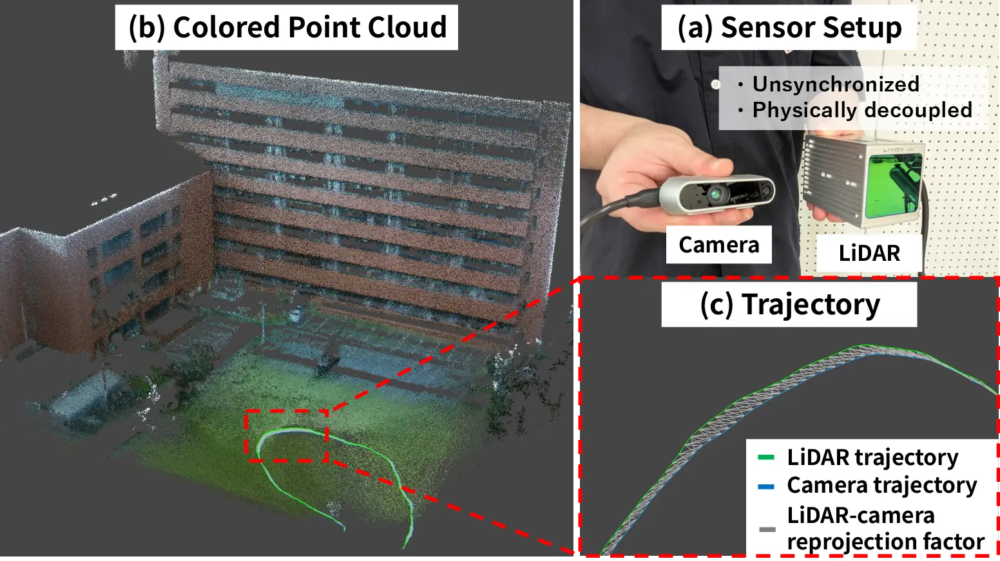
Abstract
LiDAR-Inertial-Visual Odometry (LIVO) integrates complementary LiDAR, camera, and IMU measurements to achieve robust state estimation. However, most existing methods assume a fixed relative pose and accurate time synchronization between sensors. Toward modular and heterogeneous robotic systems, this paper presents FREE-LIVO, a tightly coupled odometry method that requires neither a rigid LiDAR–camera rig nor LiDAR–camera time synchronization. The proposed method uses a pretrained image feature matcher to establish correspondences between a camera image and a dense LiDAR intensity image generated from a single LiDAR scan using a generative model. From the resulting 3D point-to-pixel correspondences, we construct reprojection factors that directly constrain LiDAR and camera poses at different acquisition times. These factors are jointly optimized in a single factor graph together with constraints from point cloud registration, visual feature tracking, and the IMU measurements associated with each sensor. On six sequences from the public M3DGR dataset, FREE-LIVO achieves an average absolute trajectory error (ATE) RMSE of 0.45 m without provided LiDAR–camera extrinsic parameters and exhibits minimal accuracy degradation under time synchronization errors of up to 0.5 s. Furthermore, experiments with the LiDAR and camera mounted on separate robots demonstrate that the method can jointly estimate the trajectories of independently moving sensors.
Proposed Pipeline
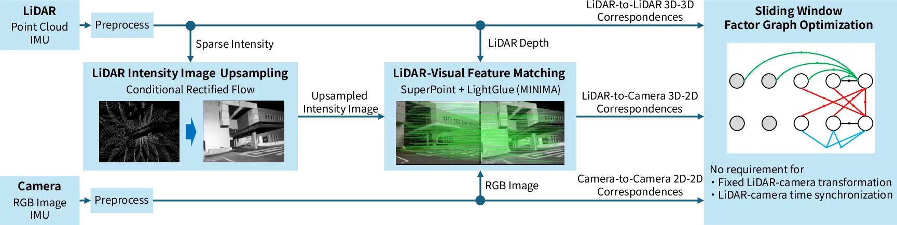
Factor Graph Optimization
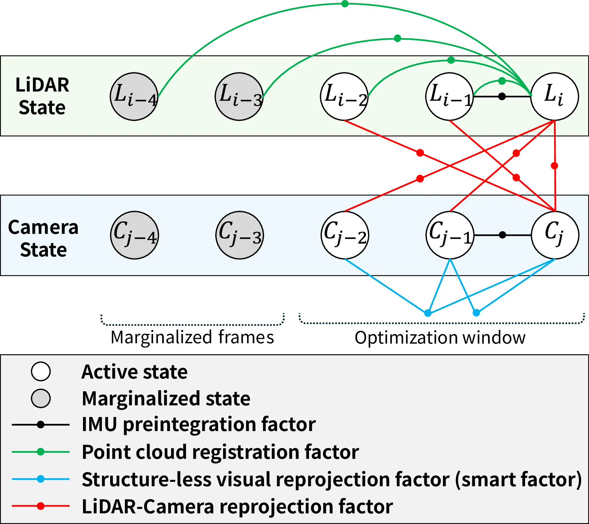
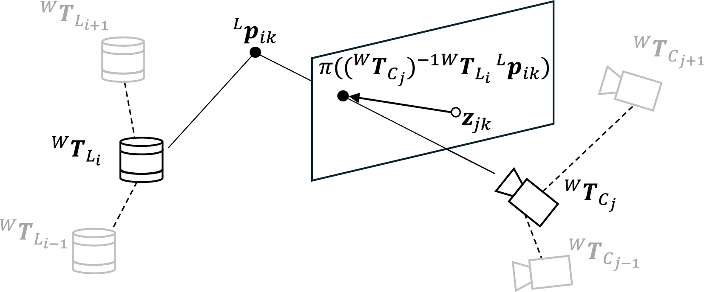
Robustness to LiDAR–Camera Synchronization Errors
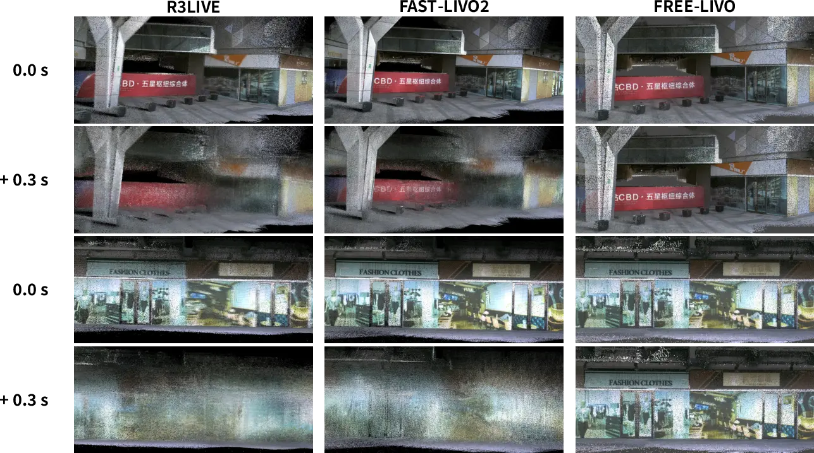
Evaluation with Physically Decoupled Sensors
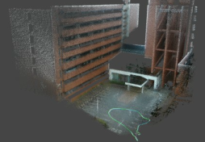
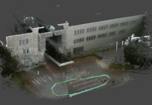
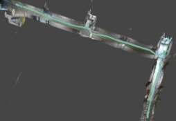
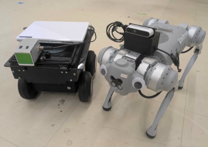
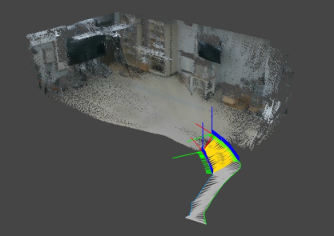
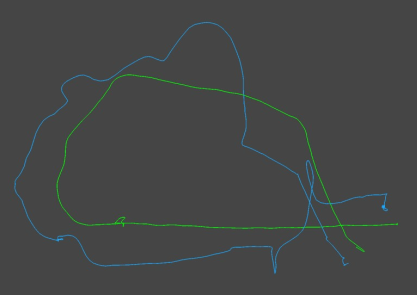